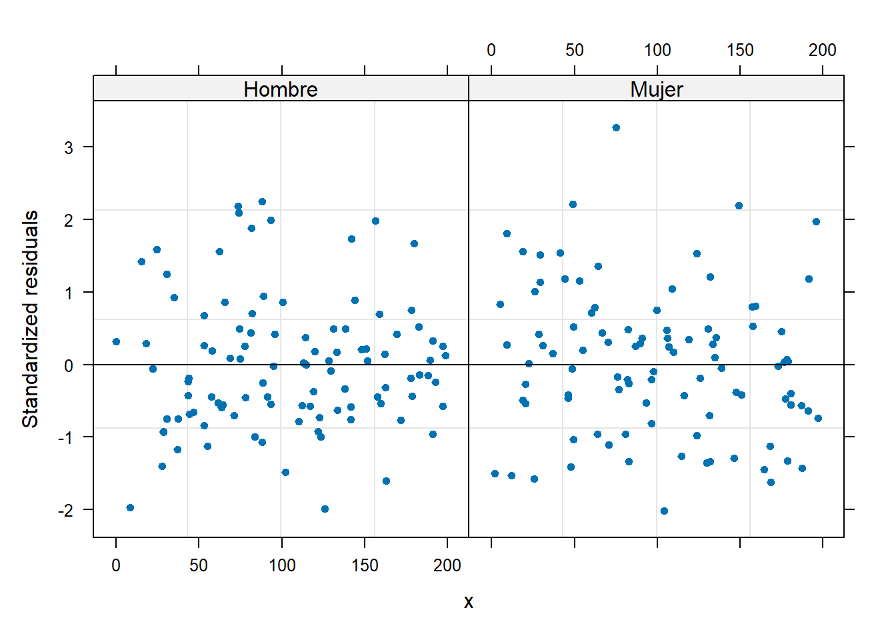
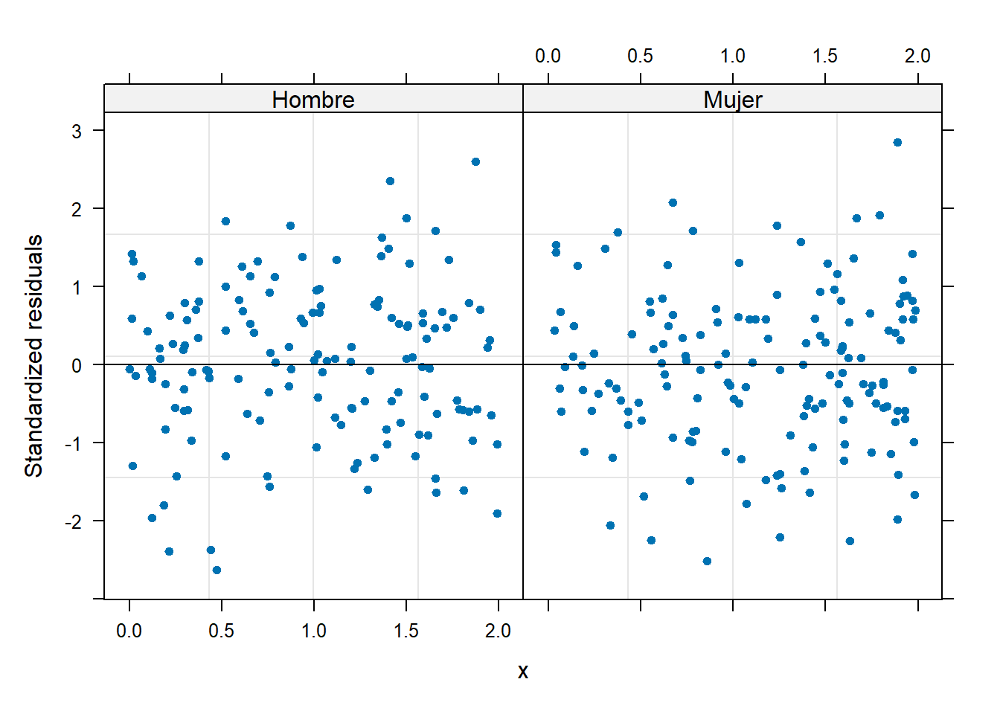
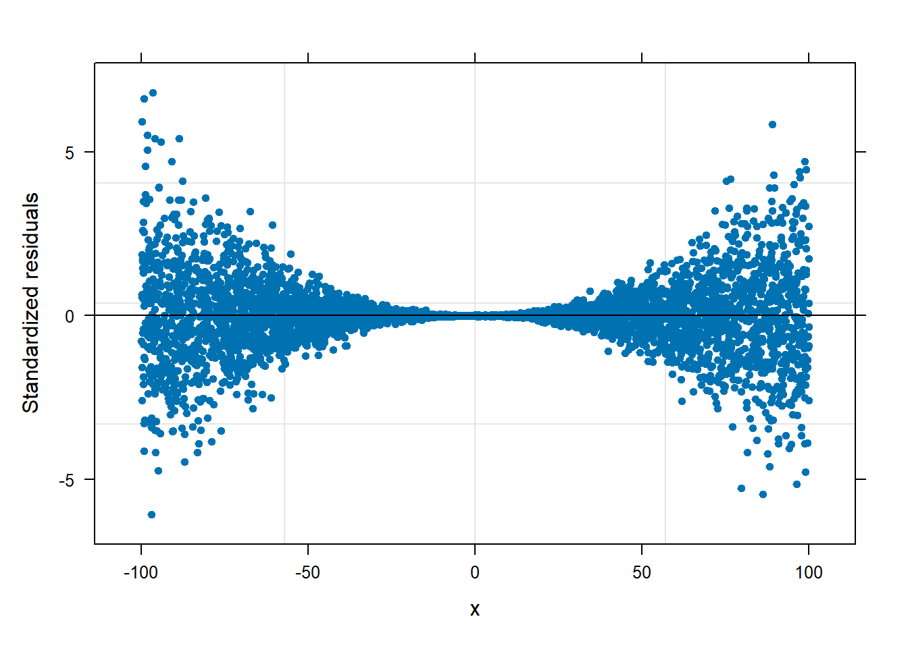
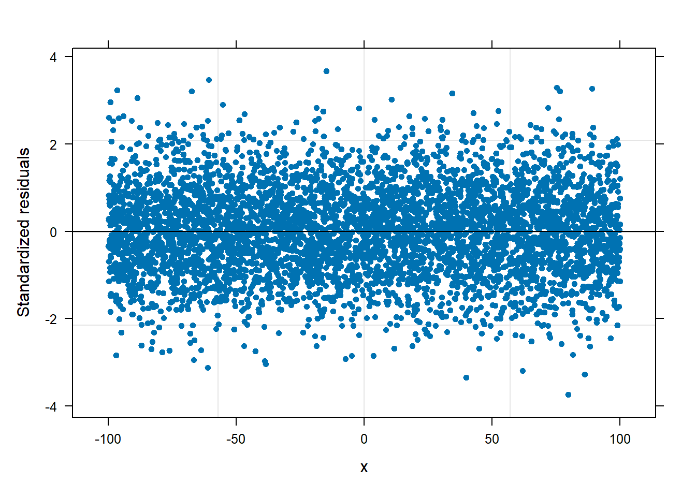

12 Modelando la heterocedasticidad
En este capítulo se mostrará como usar el paquete nlme de José Pinheiro, Bates, and R Core Team (2022) para permitir heterocedasticidad en un modelo lineal mixto.
12.1 Opciones para modelar la varianza
En la siguiente tabla se muestran las diferentes opciones para modelar la varianza \(\sigma^2_y\) de la variable respuesta \(Y\).
| Clase | Modelo |
|---|---|
| varFixed | \(\sigma^2_y = \sigma^2 x_{ij}\) |
| varIdent | \(\sigma^2_y = \sigma^2 \delta^2_{Sij}\) |
| varPower | \(\sigma^2_y = \sigma^2 |x_{ij}|^{2\delta}\) |
| varExp | \(\sigma^2_y = \sigma^2 e^{2 \delta x_{ij}}\) |
| varConstPower | \(\sigma^2_y = \sigma^2 (\delta_1 + |x_{ij}|^{\delta_2})^2\) |
| varComb | Combinación de las anteriores expresiones |
12.2 varFixed
En esta sección vamos a simular datos de un modelo lineal mixto en el cual \(\sigma^2_y\) dependa de una variable cuantitativa para luego estimar los parámetros del modelo.
Ejemplo: \(\sigma^2_y\) dependiendo de una variable cuantitativa
En este ejemplo vamos a simular observaciones \(n_i=10\) observaciones para \(G=20\) grupos (en total 200 observaciones) que tengan la estructura mostrada abajo. En este ejemplo la varianza \(\sigma^2_y\) no es constante, depende de la varianza general \(\sigma^2=9\) y de la variable \(X\), es decir \(\sigma^2_{yij} = 9 \times x_{ij}\).
\[\begin{align*} y_{ij} | b_0 &\sim N(\mu_{ij}, \sigma^2_{ij}) \\ \mu_{ij} &= 4 - 6 x_{ij} + b_{0i} \\ \sigma^2_{yij} &= 9 \times x_{ij} \\ b_{0} &\sim N(0, \sigma^2_{b0}=64) \\ x_{ij} &\sim U(0, 200) \end{align*}\]
El vector de parámetros de este modelo es \(\boldsymbol{\Theta}=(\beta_0=4, \beta_1=-6, \sigma=3, \sigma_{b0}=8)^\top\).
El código para simular las 200 observaciones se muestra a continuación. Observe que se fijó la semilla para que el lector pueda replicar el ejemplo y obtener los mismos resultados.
ni <- 10
G <- 20
nobs <- ni * G
grupo <- factor(rep(x=1:G, each=ni))
obs <- rep(x=1:ni, times=G)
set.seed(123)
x <- runif(n=nobs, min=0, max=200)
set.seed(123)
b0 <- rnorm(n=G, mean=0, sd=sqrt(64)) # Intercepto aleatorio
b0 <- rep(x=b0, each=ni) # El mismo intercepto aleatorio pero repetido
media <- 4 - 6 * x + b0
sigma2_y <- 9 * x
set.seed(123)
y <- rnorm(n=nobs, mean=media, sd=sqrt(sigma2_y))
datos <- data.frame(obs, grupo, x, y)Primero vamos a ajustar un modelo fit0 que asume varianza \(\sigma^2_y\) constante para compararlo con el modelo fit1 que si modela la varianza en función de la covariable \(X\).
library(nlme)
fit0 <- lme(y ~ x, random = ~ 1 | grupo, data=datos)Vamos a explorar el gráfico de residuales versus la covariable \(X\) para ver si hay un indicio de heterocedasticidad (varianza no costante).
plot(fit0, resid(., type = "p") ~ x, abline = 0, pch=20)De la figura anterior vemos claramente una forma de “corneta”, cerrada a izquierda y abierta a la derecha, esto es un indicio de que se debe modelar la varianza \(\sigma^2_y\).
El siguiente modelo permite que la varianza \(\sigma^2_y\) sea función de \(X\) usando una estructura varFixed.
fit1 <- lme(y ~ x, random = ~ 1 | grupo, weights=varFixed(~ x), data=datos)A continuación repetimos la misma figura de residuales anterior. De esta figura logramos ver que se eliminó el patrón de “corneta” observado antes.
plot(fit1, resid(., type = "p") ~ x, abline = 0, pch=20)La función summary se puede usar sobre el objeto fit1 para obtener una tabla de resumen, a continuación se ilustra el uso y la salida de summary.
summary(fit1)## Linear mixed-effects model fit by REML
## Data: datos
## AIC BIC logLik
## 1886.683 1899.836 -939.3417
##
## Random effects:
## Formula: ~1 | grupo
## (Intercept) Residual
## StdDev: 7.182138 2.841913
##
## Variance function:
## Structure: fixed weights
## Formula: ~x
## Fixed effects: y ~ x
## Value Std.Error DF t-value p-value
## (Intercept) 4.262272 2.7075258 179 1.57423 0.1172
## x -5.994199 0.0293592 179 -204.16788 0.0000
## Correlation:
## (Intr)
## x -0.59
##
## Standardized Within-Group Residuals:
## Min Q1 Med Q3 Max
## -2.44109665 -0.63620797 -0.05268718 0.61698526 3.36214890
##
## Number of Observations: 200
## Number of Groups: 20Según el resultado anterior \(\hat{\boldsymbol{\Theta}}=(\hat{\beta}_0=4.2623, \hat{\beta}_1=-5.9942, \hat{\sigma}=2.8419, \hat{\sigma}_{b0}=7.1821)^\top\) mientras que el vector real de parámetros es \(\boldsymbol{\Theta}=(\beta_0=4, \beta_1=-6, \sigma=3, \sigma_{b0}=8)^\top\).
En el código de abajo usamos la función anova.lme para comparar los dos modelos anteriores. Del resultado vemos que ambos modelos tienen 4 parámetros y que el modelo fit1 tiene el menor valor de BIC y mayor valor de verosimilitud, esto indica que el modelo fit1 es más apropiado para modelar los datos.
anova(fit0, fit1)## Model df AIC BIC logLik
## fit0 1 4 1912.618 1925.771 -952.3089
## fit1 2 4 1886.683 1899.836 -939.341712.3 varIdent
En esta sección vamos a simular datos de un modelo lineal mixto en el cual \(\sigma^2_y\) dependa de una variable cualitativa para luego estimar los parámetros del modelo.
Ejemplo: \(\sigma^2_y\) dependiendo de una variable cualitativa
En este ejemplo vamos a simular observaciones \(n_i=10\) observaciones para \(G=20\) grupos (en total 200 obs) que tengan la estructura mostrada abajo. En este ejemplo la varianza \(\sigma^2_y\) no es constante, depende de la varianza general \(\sigma^2=9\) y de la variable sexo, para los hombres la varianza será \(\sigma^2_y = \sigma^2 \times \delta_H^2\) y para las mujeres la varianza será \(\sigma^2_y = \sigma^2 \times \delta_M^2\). Los valores de \(\delta\) a usar en la simulación son \(\delta_H=1\) y \(\delta_M=6\), esto para hacer que las observaciones de la mujeres tengan mayor variabilidad.
El modelo de interés se puede resumir de la siguiente manera.
\[\begin{align*} y_{ij} | b_0 &\sim N(\mu_{ij}, \sigma^2_y) \\ \mu_{ij} &= 4 - 6 x_{ij} + b_{0i} \\ \text{Hombre} \quad \sigma^2_y &= 9 \times 1^2 \\ \text{Mujer} \quad \sigma^2_y &= 9 \times 6^2 \\ b_{0} &\sim N(0, \sigma^2_{b0}=64) \\ x_{ij} &\sim U(0, 200) \end{align*}\]
El vector de parámetros de este modelo es \(\boldsymbol{\Theta}=(\beta_0=4, \beta_1=-6, \sigma=3, \delta_H=1, \delta_H=6, \sigma_{b0}=8)^\top\).
El código para simular las 200 observaciones se muestra a continuación. Observe que se fijó la semilla para que el lector pueda replicar el ejemplo y obtener los mismos resultados.
ni <- 10
G <- 20
nobs <- ni * G
grupo <- factor(rep(x=1:G, each=ni))
set.seed(123)
sexo <- sample(x=c("Hombre", "Mujer"), size=nobs, replace=TRUE)
obs <- rep(x=1:ni, times=G)
set.seed(123)
x <- runif(n=nobs, min=0, max=200)
set.seed(123)
b0 <- rnorm(n=G, mean=0, sd=sqrt(64)) # Intercepto aleatorio
b0 <- rep(x=b0, each=ni) # El mismo intercepto aleatorio pero repetido
media <- 4 - 6 * x + b0
delta_h <- 1
delta_m <- 6
sigma2_y <- ifelse(sexo == "Hombre", 9 * delta_h^2, 9 * delta_m^2)
set.seed(123)
y <- rnorm(n=nobs, mean=media, sd=sqrt(sigma2_y))
datos <- data.frame(obs, grupo, sexo, x, y)Primero vamos a ajustar un modelo fit0 que asume varianza \(\sigma^2_y\) constante para compararlo con el modelo fit1 que si modela la varianza en función de la covariable sexo.
library(nlme)
fit0 <- lme(y ~ x, random = ~ 1 | grupo, data=datos)Vamos a explorar el gráfico de residuales versus la covariable sexo para ver si hay un indicio de heterocedasticidad (varianza no costante).
plot(fit0, resid(., type = "p") ~ x | sexo, abline = 0, pch=20)De la figura anterior vemos claramente que los residuales no se comportan igual para hombres y mujeres, esto es un indicio de que se debe modelar la varianza \(\sigma^2_y\) teniendo en cuenta el sexo.
El siguiente modelo permite que la varianza \(\sigma^2_y\) sea función del sexo usando una estructura varIdent.
fit1 <- lme(y ~ x, random = ~ 1 | grupo, weights = varIdent(form = ~ 1| sexo),
data=datos)A continuación repetimos la misma figura de residuales anterior. De esta figura logramos ver que se eliminó el patrón observado antes.
plot(fit1, resid(., type = "p") ~ x | sexo, abline = 0, pch=20)
La función summary se puede usar sobre el objeto fit1 para obtener una tabla de resumen, a continuación se ilustra el uso y la salida de summary.
summary(fit1)## Linear mixed-effects model fit by REML
## Data: datos
## AIC BIC logLik
## 1413.453 1429.895 -701.7267
##
## Random effects:
## Formula: ~1 | grupo
## (Intercept) Residual
## StdDev: 7.844797 2.62634
##
## Variance function:
## Structure: Different standard deviations per stratum
## Formula: ~1 | sexo
## Parameter estimates:
## Hombre Mujer
## 1.000000 6.725537
## Fixed effects: y ~ x
## Value Std.Error DF t-value p-value
## (Intercept) 3.917506 1.8639114 179 2.1018 0.037
## x -5.990032 0.0054473 179 -1099.6411 0.000
## Correlation:
## (Intr)
## x -0.305
##
## Standardized Within-Group Residuals:
## Min Q1 Med Q3 Max
## -2.01600189 -0.58592550 -0.02227228 0.49152791 3.26640788
##
## Number of Observations: 200
## Number of Groups: 20Según el resultado anterior \(\hat{\boldsymbol{\Theta}}=(\hat{\beta}_0=3.92, \hat{\beta}_1=-5.99, \hat{\sigma}=2.63, \hat{\delta}_H=1, \hat{\delta}_M=6.73, \hat{\sigma}_{b0}=7.84)^\top\) mientras que el vector real de parámetros es \(\boldsymbol{\Theta}=(\beta_0=4, \beta_1=-6, \sigma=3, \delta_H=1, \delta_H=6, \sigma_{b0}=8)^\top\).
12.4 varExp
En esta sección vamos a simular datos de un modelo lineal mixto en el cual \(\sigma^2_y\) dependa de una variable cuantitativa para luego estimar los parámetros del modelo. El siguiente ejemplo fue creado por Verónica Seguro y Yojan Alcaraz, muchas gracias por el aporte.
Ejemplo: \(\sigma^2_y\) con estructura exponencial
Vamos a simular en este ejemplo un conjunto de \(n_i = 30\) observaciones para \(G = 10\) grupos (en total 300 obs) que tengan la estructura mostrada abajo. En este ejemplo, la varianza \(\sigma_y^2\) no es constante, depende de la varianza general \(\sigma^2 = 1.7\) y de una función exponencial de la variable \(X\) y de la variable sexo. Para los hombres la varianza será \(\sigma_y^2 = \sigma^2 \times e^{2\delta_H x_{ij}}\) y para las mujeres la varianza será \(\sigma_y^2 = \sigma^2 \times e^{2\delta_M x_{ij}}\). Los valores de \(\delta\) a usar en la simulación son \(\delta_H =1\) y \(\delta_M = 2\),esto para hacer que las observaciones de la mujeres tengan mayor variabilidad.
El modelo de interés se puede resumir de la siguiente manera.
\[\begin{align*} y_{ij} | b_0 &\sim N(\mu_{ij}, \sigma^2_y) \\ \mu_{ij} &= 4 - 6 x_{ij} + b_{0i} \\ \text{Hombre} \quad \sigma^2_y &= 1.7 \times e^{2 \times 1 \times x_{ij}} \\ \text{Mujer} \quad \sigma^2_y &= 1.7 \times e^{2 \times 2 \times x_{ij}} \\ b_{0} &\sim N(0, \sigma^2_{b0}=64) \\ x_{ij} &\sim U(0, 2) \end{align*}\]
El vector de parámetros de este modelo es:
\[ \boldsymbol{\Theta}=(\beta_0=4, \beta_1=-6, \sigma=1.3038, \delta_H =1, \delta_M = 2, \sigma_{b0}=8)^\top \]
El código para simular las 300 observaciones se muestra a continuación. Observe que se fijó la semilla para que el lector pueda replicar el ejemplo y obtener los mismos resultados.
semilla <- 12345
ni <- 30
G <- 10
nobs <- ni * G
grupo <- factor(rep(x=1:G, each=ni))
set.seed(semilla)
sexo <- sample(x=c("Hombre", "Mujer"), size=nobs, replace=TRUE)
set.seed(semilla)
obs <- rep(x=1:ni, times=G)
set.seed(semilla)
x <- runif(n=nobs, min=0, max=2)
set.seed(semilla)
b0 <- rnorm(n=G, mean=0, sd=sqrt(64)) # Intercepto aleatorio
b0 <- rep(x=b0, each=ni) # El mismo intercepto aleatorio pero repetido
media <- 4 - 6 * x + b0
delta_h <- 1
delta_m <- 2
sigma2_y <- ifelse(sexo == "Hombre", 1.7 * exp(2*delta_h*x), 1.7 * exp(2*delta_m*x))
set.seed(semilla)
y <- rnorm(nobs, mean = media, sd = sqrt(sigma2_y))
datos <- data.frame(obs, grupo, sexo, x, y)Veamos en el siguiente gráfico la diferencia de las densidades entre los hombres y las mujeres:
library(ggplot2)
ggplot(datos, aes(y)) +
geom_density(aes(fill=factor(sexo)), alpha=0.4)+
scale_fill_manual(values = c("blue", "red")) +
labs(x = "Y", y = "Densidad", fill = "Sexo")+
theme_bw() Ahora, vamos a ajustar el modelo , que asume varianza \(\sigma_y^2\) constante para compararlo con el modelo que si modela la varianza en función de \(X\) y de la covariable sexo usando una estructura :
library(nlme)
fit0 <- lme(y ~ x, random = ~ 1 |grupo, data=datos)Vamos a explorar el gráfico de residuales versus la covariable \(X\) separando por sexo para ver si hay un indicio de heterocedasticidad (varianza no costante).
plot(fit0, resid(., type = "p") ~ x | sexo, abline = 0, pch=20)De la figura anterior vemos claramente que los residuales no se comportan igual para hombres y mujeres, esto es un indicio de que se debe modelar la varianza \(\sigma^2_y\) teniendo en cuenta el sexo.
Por ello se procede al ajuste del modelo , en donde la varianza es función de \(X\) y de la covariable sexo usando una estructura .
fit1 <- lme(y ~ x, random = ~ 1 | grupo, weights = varExp(form = ~ x|sexo), data=datos)Se repite la misma figura de residuales y se observa homogeneidad de varianza sin importar el nivel de la variable sexo:
plot(fit1, resid(., type = "p") ~ x | sexo, abline = 0, pch=20) La función se puede usar sobre el objeto para obtener una tabla de resumen, a continuación se ilustra el uso y la salida de .
summary(fit1)## Linear mixed-effects model fit by REML
## Data: datos
## AIC BIC logLik
## 2065.342 2087.525 -1026.671
##
## Random effects:
## Formula: ~1 | grupo
## (Intercept) Residual
## StdDev: 6.791002 1.355803
##
## Variance function:
## Structure: Exponential of variance covariate, different strata
## Formula: ~x | sexo
## Parameter estimates:
## Mujer Hombre
## 1.94263 1.02304
## Fixed effects: y ~ x
## Value Std.Error DF t-value p-value
## (Intercept) 3.450857 2.1662604 289 1.593002 0.1123
## x -6.155959 0.5083259 289 -12.110261 0.0000
## Correlation:
## (Intr)
## x -0.095
##
## Standardized Within-Group Residuals:
## Min Q1 Med Q3 Max
## -2.631728926 -0.601368395 -0.008366753 0.630296488 2.839555782
##
## Number of Observations: 300
## Number of Groups: 10De la salida anterior tenemos que
\[ \boldsymbol{\hat{\Theta}}=(\hat{\beta_0}=3.450, \hat{\beta_1}=-6.156, \hat{\sigma}=1.355, \hat{\delta}_H=1.023, \hat{\delta}_M = 1.942, \hat{\sigma}_{b0}=6.791)^\top \]
mientras que el vector real de parámetros es
\[ \boldsymbol{\Theta}=(\beta_0=4, \beta_1=-6, \sigma=1.3038, \delta_H =1, \delta_M = 2, \sigma_{b0}=8)^\top \]
En el código de abajo usamos la función para comparar los dos modelos anteriores. Del resultado vemos que ambos modelos tienen 6 parámetros y que el modelo tiene el menor valor de BIC y mayor valor de verosimilitud, esto indica que el modelo es más apropiado para modelar los datos.
anova(fit0,fit1)## Model df AIC BIC logLik Test L.Ratio p-value
## fit0 1 4 2700.538 2715.326 -1346.269
## fit1 2 6 2065.342 2087.525 -1026.671 1 vs 2 639.1955 <.000112.5 varConstPower
En esta sección vamos a simular datos de un modelo lineal mixto en el cual la varianza de la respuesta \(\sigma_{y}^2 = \sigma^2 (\delta_1 + |x_{ij}|^{\delta_2})^2\) tiene una estructura conformada por una constante más una función potencia de la varianza. El siguiente ejemplo fue creado por Simón Cuartas, muchas gracias por el aporte.
Ejemplo: \(\sigma_y^2\) dependiendo de una variable constante más la potencia de una variable cuantitativa
En este ejemplo vamos a simular \(n_i = 50\) observaciones para \(G = 100\) grupos (en total 800 observaciones) que tengan la estructura mostrada abajo. En este ejemplo la varianza de la respuesta \(\sigma_y^2\) no es constante sino que depende de la varianza general \(\sigma^2 = 9\) y de la variable continua \(X\) con \(\delta_1 = 1.2\) y \(\delta_2 = 2.1\).
\[ \begin{aligned} y_{ij} | b_0 & \sim N(\mu_{ij}, \ \sigma_{ij}^2) \\ \mu_{ij} & = 4 - 6 x_{ij} + b_{0i} \\ \sigma_{yij}^2 & = 9 \times (1.2 + |x_{ij}|^{2.1})^2 \\ b_0 & \sim N(0, \ \sigma_{b0}^2 = 64) \\ x_{ij} & \sim U(-100, \ 100) \end{aligned} \]
El vector de parámetros de este modelo es \(\boldsymbol{\Theta} = (\beta_0 = 4, \ \beta_1 = -6, \ \sigma = 3, \ \sigma_{b0} = 8, \ \delta_1 = 1.2, \ \delta_2 = 2.1)^{\top}\)
El código para simular las 5000 observaciones se muestra a continuación. Observe que se fijó la semilla para que el lector pueda replicar el ejemplo y obtener los mismos resultados.
semilla <- 123456
ni <- 50
G <- 100
nobs <- ni * G
grupo <- factor(rep(x = 1:G, each = ni))
obs <- rep(x = 1:ni, times = G)
set.seed(semilla)
x <- runif(n = obs, min = -100, max = 100)
set.seed(semilla)
b0 <- rnorm(n = G, mean = 0, sd = sqrt(64))
b0 <- rep(x = b0, each = ni)
media <- 4 - 6 * x + b0
delta_1 <- 1.2
delta_2 <- 2.1
sigma2_y <- 9 * (delta_1 + abs(x) ^ delta_2 ) ^ 2
set.seed(semilla)
y <- rnorm(n = obs, mean = media, sd = sqrt(sigma2_y))
datos <- data.frame(obs, grupo, x, y)Primero vamos a ajustar un modelo fit0 que asume varianza \(\sigma_{ij}^2\) constante para compararlo con el modelo fit1 que sí modela la varianza de la covariable sexo.
library(nlme)
fit0 <- lme(y ~ x, random = ~ 1 | grupo, data = datos)Vamos a explorar el gráfico de residuales versus la covariable sexo para ver si hay un indicio de heterocedasticidad (varianza no constante).
plot(fit0, resid(., type = "p") ~ x, abline = 0, pch=20)
De la figura anterior vemos que los residuales estandarizados no son constantes, se logra apreciar una forma clara de corbatín. Cuando la covariable \(X\) toma valores extremos, es decir, cercanos a \(-100\) o a \(100\), los residuales estandarizados presentan mucha variabilidad, mientras que para valores de \(X\) cercanos a cero, los residuales presentan poca variabilidad.
El siguiente modelo permite que la varianza \(\sigma_y^2\) sea función de la covariable continua \(X\) usando una estructura varConstPower.
fit1 <- lme(y ~ x, random = ~ 1 | grupo,
weights = varConstPower(form = ~ x),
data = datos)A continuación repetimos la misma figura de residuales anterior. De esta figura logramos ver que se eliminó el patrón observado antes.
plot(fit1, resid(., type = "p") ~ x, abline = 0, pch=20)
La función summary se puede usar sobre el objeto fit1 para obtener una tabla de resumen, a continuación se ilustra el uso y la salida de summary.
summary(fit1)## Linear mixed-effects model fit by REML
## Data: datos
## AIC BIC logLik
## 101473 101512.1 -50730.51
##
## Random effects:
## Formula: ~1 | grupo
## (Intercept) Residual
## StdDev: 8.880321 2.813496
##
## Variance function:
## Structure: Constant plus power of variance covariate
## Formula: ~x
## Parameter estimates:
## const power
## 1.378660 2.116314
## Fixed effects: y ~ x
## Value Std.Error DF t-value p-value
## (Intercept) 5.747179 1.2959437 4899 4.434744 0
## x -5.572710 0.6257808 4899 -8.905211 0
## Correlation:
## (Intr)
## x -0.045
##
## Standardized Within-Group Residuals:
## Min Q1 Med Q3 Max
## -3.739732278 -0.673908712 0.006686823 0.669941450 3.672055870
##
## Number of Observations: 5000
## Number of Groups: 100Según el resultado anterior,
\[\hat{\boldsymbol{\Theta}} = (\hat{\beta}_0 = 5.747, \ \hat{\beta}_1 = -5.572, \ \ \hat{\sigma} = 2.813, \ \hat{\sigma}_{b0} = 8.880, \ \hat{\delta}_1 = 1.379, \ \hat{\delta}_2 = 2.116)^\top \]
Mientras que el vector real de parámetros es: \(\boldsymbol{\Theta} = (\beta_0 = 4, \ \beta_1 = -6, \ \sigma = 3, \ \sigma_{b0} = 8, \ \delta_1 = 1, \ \delta_2 = 3)^{\top}\).